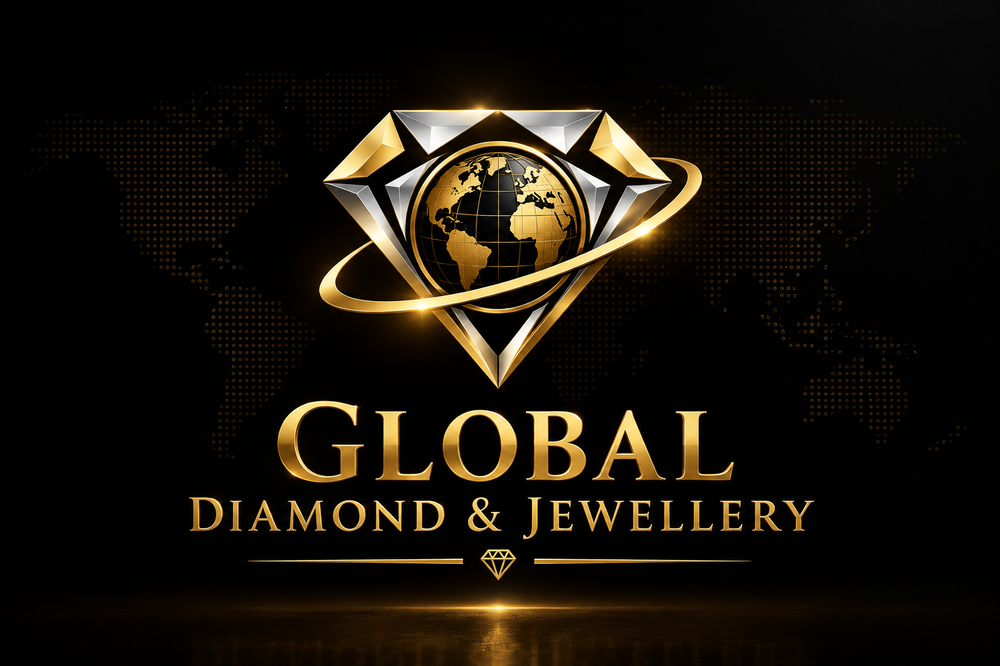

Lyxen
Founded in 2019, Lyxen began its journey as a dedicated venture in the diamond and jewellery manufacturing sector. What started as a passionate offline craftsmanship enterprise has now grown into a trusted powerhouse of certified diamond sourcing and bespoke fine jewellery creation.
In 2022, to bridge the gap between traditional wholesale trade and global digital accessibility, we officially launched our comprehensive e-commerce and inventory portal. This strategic expansion allowed us to serve international clients, retail partners, and jewellery connoisseurs worldwide with absolute transparency and ease.

At Lyxen, every single piece of diamond jewellery and loose diamond is crafted and verified under stringent international parameters. We ensure that our clients receive 100% authentic, ethical, and top-grade certified items.
Before any item leaves our facility, it undergoes microscopic examination, setting security checks, and metal durability testing to ensure lifelong performance and unmatched sparkle.
We provide dedicated B2B and retail support, helping clients with custom design requests, secure insured worldwide shipping, and transparent order tracking.
Headquartered in Gujarat, India, Lyxen operates a robust and streamlined distribution network. Every certified product undergoes rigorous multi-layer quality inspections before it is securely packaged for international delivery. Our commitment to transparent business practices, official certifications, and personalized customer service has made us a trusted partner worldwide.